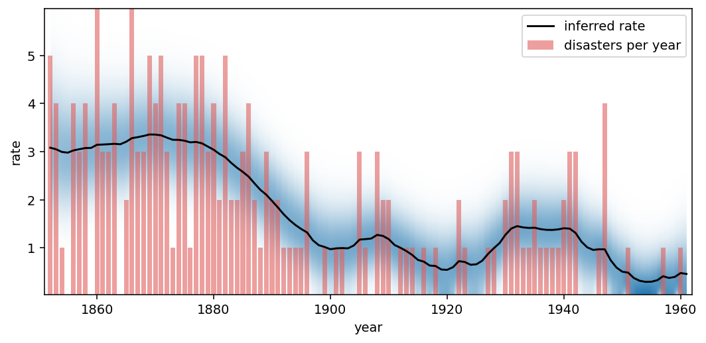

bayesloop 2.0
Time series models with parameters that
change over time
bayesloop is a Python library for Bayesian inference on time series. It tracks time-varying parameters, detects change-points and structural breaks, and objectively compares competing models via the marginal likelihood — using fast grid-based computation instead of MCMC sampling.
pip install bayesloop
Clean snake_case API
Consistent, modern Python naming across the entire library.
Faster fits
Adaptive likelihood caching and optimized built-in models.
Parallel hyper-studies
HyperStudy and ChangepointStudy fan out across cores via joblib.
Painless migration
import bayesloop.v1compat runs your 1.x scripts unchanged.
Why bayesloop?
Real-world systems rarely keep their statistical properties constant. bayesloop embraces that: it treats model parameters as dynamic quantities and infers how they evolve — together with the evidence you need to decide between competing hypotheses.
Time-varying parameters
Infer full posterior distributions of model parameters at every single time step — not just point estimates.
Model selection
Compare hypotheses about parameter dynamics on objective grounds, via the marginal likelihood (model evidence).
Custom models
Build observation models from SymPy random variables, SciPy distributions or plain NumPy functions.
Change-point detection
Locate abrupt changes and structural breaks — including full uncertainty about when they happened.
Online studies
Feed in data point by point and run real-time model selection on streaming data.
Missing data
NaN values are handled natively by the inference algorithm — no imputation gymnastics required.
Try it — right here, right now
This playground runs a complete bayesloop analysis entirely in your browser via Pyodide (Python compiled to WebAssembly). Nothing is sent to a server. The example below analyses the classic UK coal mining disaster record: did mine safety really improve at the end of the 19th century — and how quickly? Edit the code, press Run, and find out.
First run downloads the Python runtime (~40 MB) — subsequent runs are instant.
Output will appear here…

Pre-rendered result — press Run to compute it live in your browser.
Built for research
bayesloop has been employed in cancer research (migration paths of invasive tumor cells), financial risk assessment, climate research and accident analysis.